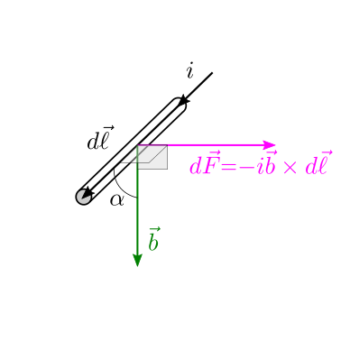
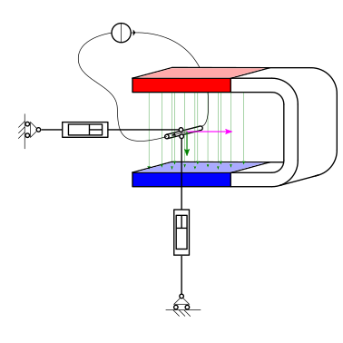
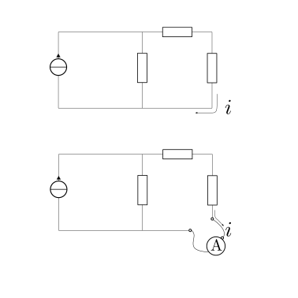
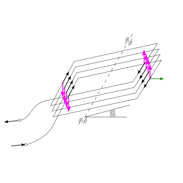
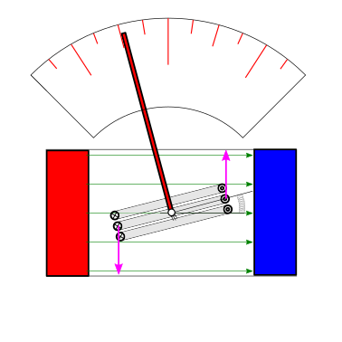
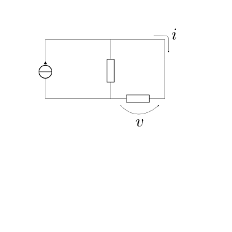
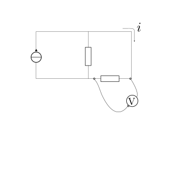
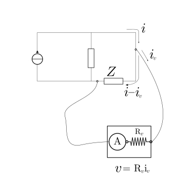

24.3. Magnetismo ed elettromagnetismo in regime stazionario#
24.3.1. Esperienze elementari su campo magnetico#
cos’è? come costruire un campo magnetico? o avere multipli di un campo magnetico?
24.3.2. Esperienza di Faraday#
L’esperienza di Faraday riconosce che su un tratto elementare \(d \vec{\ell}\) di un cavo elettrico percorso da corrente \(i\) in un campo magnetico \(\vec{b}\) agisce una forza elementare
Riconoscendo che il risultato è frutto dell’applicazione del modello di conduttore con sezione piccola si può riscrivere l’espressione della forza in termini di densità di corrente elettrica usando la relazione (25.3), e cercando la densità volumentrica di forza \(\vec{f}\), tale che \(d \vec{F} = \vec{f} dV = \vec{f} A d \ell\),
e quindi
todo ha senso associarla a Faraday? Nessuno la conosceva prima? Galvani, Volta,… come misuravano la corrente elettrica?
 |
 |
24.3.2.1. L’amperometro#
L’amperometro è uno strumento per la misura della corrente elettrica. L”esperienza di Faraday sulla forza agente su un conduttore percorso da corrente in un campo magnetico può essere utilizzata per costruire un amperometro rudimentale. All’interno di questo amperometro una bobina ha come unico grado di libertà la rotazione attorno a un asse, e a questo grado di libertà è associata una rigidezza meccanica fornita ad esempio da una molla torsionale di costante elastica \(k\). La bobina è soggetta a un campo magnetico generato da un magnete permanente. La risultante delle azioni meccaniche agenti sulla bobina è un momento attorno all’asse di rotazione che per piccoli angoli di rotazione \(\theta\) vale \(M = N A B i\), essendo \(N\) il numero di avvolgimenti della bobina, \(A\) l’area della sezione rettangolare, \(B\) l’intensità del campo magnetico.
La condizione di equilibrio alla rotazione corrisponde all’equilibrio dei momenti,
dal quale è possibile ricavare la misura della corrente \(i\) all’interno dell’amperometro dalla lettura dell’angolo di rotazione della bobina,
L’amperometro viene collegato in serie nel lato del circuito nel quale si vuole misurare la corrente elettrica. Per ottenere un”intrusività ridotta dello strumento nel sistema, l’amperometro deve avere una resistenza elettrica ridotta per non modificare radicalmente l’impedenza (la resistenza in regime stazionario) del lato in cui si misura la corrente.
Le azioni meccaniche, l’intrusività e la sensibilità di un amperometro vengono discussi come esercizio.
 |
 |
 |
Exercise 24.49 (Amperometro - Azioni agenti sulla bobina)
Exercise 24.50 (Amperometro - Intrusività)
Exercise 24.51 (Amperometro - Sensibilità)
24.3.2.2. Il voltmetro#
Il voltmetro è uno strumento per la misura della differenza di tensione. todo
un modello rudimentale di voltmetro si basa su un amperometro in serie a una resistenza elettrica nota \(R_{v}\) elevata, per ridurre l”intrusività dello strumento: maggiore è la resistenza, minore è la corrente che passa nel voltmetro. Nota la resistenza \(R_v\) e letta l’intensità di corrente dalla misura dell’amperometro, la differenza di tensione è misurata usando la legge di Ohm (24.6) come \(v = R_v i\)
il voltmetro viene collegato in parallelo al componente del circuito ai capi del quale si vuole misurare la differenza di tensione.
 |
 |
 |
Exercise 24.52 (Voltmetro - Intrusività)
todo
24.3.3. Esperienze di Oersted e Ampere#
interazione tra corrente elettrica e campo magnetico, in regime stazionario:
esperienze di Oesrted e Ampére:
24.3.3.1. Esperienza di Oersted#
24.3.3.2. Esperienza di Ampére#
L’apparato sperimentale per replicare l’esperienza di Ampére è formato da due cavi elettrici paralleli di lunghezza \(L\) a distanza \(d\) e percorsi da corrente \(i_1\), \(i_2\). La forza agente sul cavo \(2\) dovuta alla corrente che percorre il cavo \(1\) è diretta lungo la direzione che congiunge i due cavi, e ha intensità per unità di lunghezza
positiva se il cavo \(2\) viene attratto in direzione del cavo \(1\).
Confrontando l’espressione della forza nell’esperienza di Ampére con l”esperienza di Faraday,
è possibile ricavare l’espressione del campo magnetico prodotto da un cavo infinito percorso da corrente elettrica,
Storicamente, l’esperimento di Ampére fu utilizzato per definire l’Ampére, \(A\), come unità di misura della corrente elettrica. Dalla definizione Definition 2.1 segue il valore «esatto» della permeabilità del vuoto
todo direzione del campo
todo immagini
24.3.4. Legge di Biot-Savart#
La legge di Biot-Savart permette di generalizzare i risultati dell’esperienza di Ampére. Il contributo elementare al campo magnetico \(\vec{b}(\vec{r}_0)\) nel punto dello spazio \(\vec{r}_0\) dovuto a un cavo elettrico1 di lunghezza elementare \(d \ell\) posizionato nel punto dello spazio \(\vec{r}\) e percorso da corrente elettrica \(i\) è dato dalla formula
Di conseguenza, il contributo dovuto alla corrente in un cavo elettrico descritto dal percorso \(\gamma(\vec{r})\) è la somma dei contributi elementari (24.9), per fenomeni continui l’integrale
todo aggiungere immagini per Biot-Savart
todo fare una sezione nel capitolo, per descrivere l’approccio comune ai fenomeni elettromagnetici, in cui compaiono «punti potenzianti» (attivi, dove c’è la causa di un fenomeno; qui il punto \(\vec{r}\) dove c’è il cavo conduttore) e «punti potenziati» (passivi, dove si osserva la conseguenza di un fenomeno; qui il punto \(\vec{r}_0\) dove si misura il campo magnetico)
24.3.4.1. Esempi di campi magnetici generati da corrente in cavi elettrici#
In questa sezione si mostra il campo magnetico prodotto dalla corrente elettrica che passa in un cavi elettrici con particolari configurazioni: il cavo rettilineo infinito, la spira circolare, il solenoide infinito rettilineo, il solenoide toroidale. Queste configurazioni possono essere considerate delle idealizzazioni di casi reali, e costituiscono una buona approssimazione nel caso in cui si possano trascurare effetti di bordo. (todo discutere)
Le formule vengono ricavate in appendice, usando lla forma generale della legge di Biot-Savart, e quando possibile delle considerazioni sulla geometria e sulle simmetrie dei problemi.
todo aggiungere immagini per casi particolari
Filo rettilineo infinito
Spira circolare - campo magnetico sull’asse
Sfruttando la simmetria cilindrica del problema, è possibile calcolare il campo magnetico $$ sull’asse di una spira circolare
Solenoide rettilineo
Applicando la legge di Ampére,
Il flusso del campo magnetico (uniforme) vale quindi
Solenoide toroidale
Applicando la legge di Ampère,
Il flusso del campo magnetico attraverso le sezioni del toro vale
todo
24.3.5. Modelli microscopici del magnetismo#
todo correnti di Ampére. Una carica elettrica in movimento (passare da Biot-Savart a carica, da corrente a carica discreta) genera un campo magnetico; un”\(e^-\) in moto attorno al nucleo - qualsiasi cosa sia, sia l’elettrone, sia il suo movimento - quindi genera un campo magnetico, comportandosi come una spira (o un dipolo magnetico); a questo contributo, si aggiunge un momento magnetico intrinsceco di spin, come dimostrato dall”esperimento di Stern-Gerlach.
L’allineamento dei momenti magnetici degli atomi appartenenti a una vasta regione di un mezzo macroscopico si manifesta come magentismo del mezzo
todo aggiungere dettagli, temperatura di Curie,…
24.3.6. Moto di una carica elettrica in un campo elettromagnetico#
Il moto di una corpo puntiforme di massa \(m\) e carica elettrica \(q\) in una regione dello spazio nel quale è presente un campo elettromagnetico \(\vec{e}(P, t)\), \(\vec{b}(P,t)\) è soggetto a una forza esterna,
definita forza di Lorentz.
Nell’ipotesi di risultante nulla degli effetti del campo elettromagnetico generato da un sistema su se stesso2, l’equazione dinamica che governa il moto del sistema è
Esempi dell’applicazioni della legge di Lorentz si ritrovano negli esperimenti condotti a cavallo della 1900 nell’indagine sulla struttura della materia e sui suoi componenti elementari, come:
…
todo esempi
24.3.7. Verso le equazioni di Maxwell#
Fare riferimento a:
equazioni di Maxwell e principi dell’elettromagnetismo classico in regime stazionario
equazioni di Maxwell e principi dell’elettromagnetismo classico
24.3.7.1. Legge di Gauss per il flusso del campo magnetico#
todo interpretazione: inesistenza del monopolo magnetico? linee di campo chiuse?
24.3.7.2. Legge di Ampére in regime stazionario#
essendo \(\ell_S = \partial S\) il contorno - chiuso - della superficie \(S\).
Non abbiamo ancora finito l’indagine sui fenomeni elettromagnetici. Le equazioni che abbiamo trovato finora:
sono incomplete, nel senso che non riescono a descrivere il fenomeno fisico dell”induzione elettromagnetica, e di questo non possiamo accorgercene senza ulteriori esperienze
tra di loro incongruenti, contraddittorie, e di questo possiamo accorgercene confrontando la legge di Ampére in regime stazionario (24.13) con l”equazione di bilancio della carica elettrica (24.3). La legge di Ampéere in regime stazionario (24.13) per una superficie chiusa \(S = \partial V\) si riduce a
\[\Phi_{\partial V}(\vec{j}) = 0 \ ,\]poiché il contorno \(\partial \ell\) di una superficie chiusa \(S = \partial V\) non ha estensione, non esiste. Confrondando questa equazione con la legge di bilancio della carica elettrica,
\[\dot{Q}_V = - \Phi_{\partial V}(\vec{j}) \ ,\]si sarebbe tentati di concludere che \(\dot{Q}_V \equiv 0\) per ogni volume \(V\), cioè non è possibile cambiare la carica elettrica contenuta in qualsiasi volume \(V\). Questa conclusione dimostra una chiara incongruenza con l’esperienza, e la sua soluzione da parte di Maxwell sarà un contributo decisivo per formulare un insieme di princìpi fisici consistente dei fenomeni elettromagnetici, e riconoscerne il carattere ondulatorio.
Sono necessarie quindi due «correzioni» delle equazioni, per includere fenomeni non stazionari, in generale più difficili da cogliere: una correzione sarà necessaria per poter descrivere l’induzione elettromagnetica, l’altra per rendere l’equazione di Ampére compatibile con il principio di conservazione della carica elettrica. Questi due interventi vengono discussi nel capitolo successivo e sono legati ai nomi di due giganti della scienza, rispettivamente M.Faraday e J.C.Maxwell.
- 1
Fare riferimento alla sezione sul cavo elettrico, e l’approssimazione circuitale di cavi elettrici.
- 2
Il campo elettromagnetico generato dalla carica nell’istante \(t\) non influenza il moto della carica stessa allo stesso istante. Perché evidenziare il tempo \(t\)? Perché il campo EM si propaga nello spazio e nel tempoe quindi il moto di una carica al tempo \(t\) può essere influenzato dal campo elettromagnetico generato da una carica - anche se stessa (se c’è riflessione…) - in qualche istante precedente.